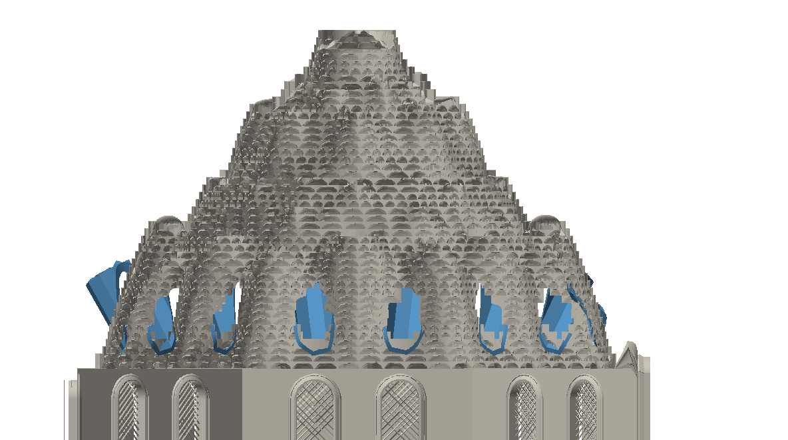
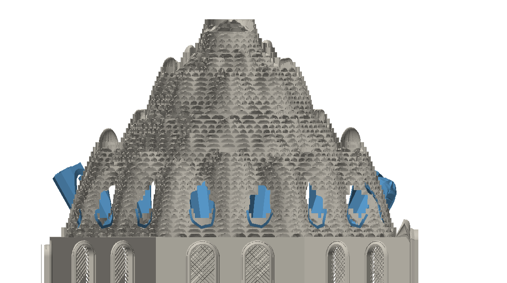

Salientes de la cúpula
Comparación del alzado antes y después. Se han rebajado los casquetes de cierre y los techos de los pozos, conservando sus bocas. La clave central conserva su altura.


AnteriorCorregido
Los pozos se muestran en azul para localizarlos. Es una comparación geométrica de media cúpula, con el origen y la escala vigentes; no una correspondencia pieza por pieza con la fotografía.
Referencia: Foto de Ferrer.png

La imagen acota el perfil general. La corrección es una propuesta contrastada con ese alzado; la profundidad de cada hueco no queda medida por esta vista.